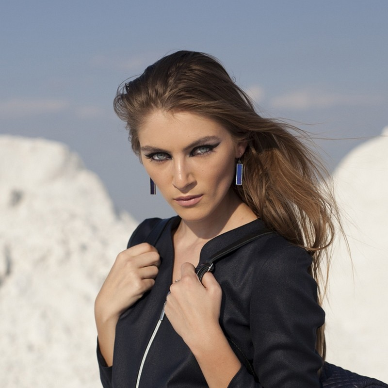

Sidabriniai auskarai, internetu, kaina - SIDABRITA
- Auskarai su pusbrangiais akmenimis | Sidabro auskarai
Elegantiški ir išskirtiniai Tomas Gold sidabriniai auskarai yra gaminami kruopščių juvelyrų rankomis ir tik iš aukščiausios kokybės medžiagų. Maži ar dideli sidabriniai auskarai visada derės prie jūsų aprangos ir tiks bet kuriai progai. Sidabriniai auskarai suteiks jūsų įvaizdžiui išskirtinę natą ir sukurs harmonijos jausmą. - Auskarai - Decomundo
Auskarai su briliantais – tai universali dovana, kurią populiaru pirkti bet kurio amžiaus merginai ar moteriai. Nesvarbu, ar tai dovana krikšto dukrai, dukrai, žmonai ar motinai – iškilminga proga įteikiami auskarai su deimantais yra didelė vertybė, kuri gali būti perleidžiama iš kartos į kartą ir ilgus metus džiuginti ne ... - Auksiniai auskarai | ziedelis.lt
Mažyčiai ar ilgi, žėrintys ar matiniai, iš sidabro ar aukso – rankų darbo dailieji auskarai užkariaus kiekvienos moters širdį. Šie itin subtiliai atrodantys papuošalai gimė tam, kad skleistų džiugesį – rankų darbo auskarai taps nuostabia dovana ir jaunai merginai, ir per gyvenimą užtikrintai žengiančiai moteriai, ir elegantiškajai mamai, ir solidžiai senelei. - Auskarai su deimantais, briliantais (auksiniai) | Aukso ...
Auskarai - bene populiariausia papuošalų rūšis. Jie būdingi visoms kultūroms ir kraštams. Šiais laikais ausis prasiduria ne tik merginos, bet ir vaikinai, o auskarų kolekcijoje dažniausiai galima rasti tai, kas atspindi nuotaiką ar tiesiog tinka prie rūbų. - Auskarai - Norų Namai
Aukštos kokybės auksiniai ir sidabriniai auskarai internetu užsakomi greitai ir patogiai, pristatomi patikimai ir greitai. Pasirinkimo gausa Jus nustebins! Rasite ir kuklių, santūrių auskarų ir puoštų cirkoniu, turkiu, opalu bei kitais akmenimis. - Trollbeads | Auskarai internetu - Trollbeads.lt
Auskarai su briliantais atrodo nepaprastai įspūdingai, jie tiks įvairioms progoms, prie skirtingų drabužių derinių. Segint auskarus su briliantais kitų papuošalų nė nereikia, nes briliantų spindesys bus esminis akcentas moters įvaizdyje, kurio nereikia papildyti niekuo kitu. Auksiniai auskarai su brangakmeniais žavi savo ... - Auksiniai auskarai, Balto aukso auskarai, raudono aukso ...
Auskarai internetu. Auskarai puošia žmogaus veidą nuo neatmenamų laikų. Dar prieš 7000 metų jie jau buvo populiarūs senovės Azijoje – tiesa, daugiau kaip vyrų papuošalas. Egiptiečiai ir asirai auskarais demonstruodavo savo priklausymą aukštesnei gyventojų klasei. - Auskarai - auksaspigiau.lt
Auksiniai auskarai, pakabukai, žiedai, grandinėlės, apyrankės, pakabukai. Gavome siutinuką, labai gražūs papuošaliukai. Ačiu Jums labai , butinai ... - Gintaro auskarai internetu | saniston.com
Auskarai – vienas populiariausių moteriškų papuošalų. Auskarai – mediniai, sidabriniai ar pagaminti iš metalo papuošalai žinomi ir nešiojami jau daugybę metų, tačiau vis dar nepraranda savo nuostabaus žavesio. Šie papuošalai suteikia žavesio ir pasitikėjimo savo grožiu. - Auskarai į bambą internetu - Puosnidama.lt
Auskarai iš balto,raudono, geltono aukso internetu. Visus juvelyrinius dirbinius galite apžiūrėti pardavimo vietose ar siunčiame paštu. Grąžinimo garantija 14 d

0
Jūsų krepšelis yra tuščias
+370 682 69806
parašykite mums
Prisijungti / Užsiregistruoti Krepšelis tuščias - PAPILDOM? Rodyti krepšelį Į pradžią Papuošalų katalogas ▼ Auskarai Sidabriniai auskarai Sidabriniai auskarai su akmenimis Sidabriniai auskarai su Cirkoniu Sidabriniai auskarai su Oniksu Sidabriniai auskarai su Koralu Sidabriniai auskarai su Swarovskio kristalu Sidabriniai auskarai su Katės akimi Sidabriniai auskarai su Turkiu Sidabriniai auskarai su Hematitu Sidabriniai auskarai su Malachitu Sidabriniai auskarai su Gintaru Sidabriniai auskarai su Kairo naktimi ir Saulės smėliu Sidabriniai auskarai su Opalu ir Mėnulio akmeniu Sidabriniai auskarai su Agatu Sidabriniai auskarai su perlais Sidabriniai auskarai Ringės Auskarai į kūną Sidabrinės koljė Sidabrinės sagės Sidabrinės krikštynų dovanos Kaklo papuošalai Dovanų dėžutės ir maišeliai Sidabriniai žiedai 15 - 15,5 dydžio sidabriniai žiedai 16 – 16,5 dydžio sidabriniai žiedai 17 – 17,5 dydžio sidabriniai žiedai 18 – 18,5 dydžio sidabriniai žiedai 19 – 19,5 dydžio sidabriniai žiedai 20 – 20,5 dydžio sidabriniai žiedai 21 – 21,5 ir 22 – 22,5 dydžių sidabriniai žiedai Sidabrinės apyrankės Sidabrinės apyrankės su akmenimis Įvairios sidabrinės apyrankės Sidabriniai laikrodžiai Sidabriniai pakabukai Sidabriniai kryžiukai ir medalionai Sidabriniai pakabukai su akmenimis Įvairūs sidabriniai pakabukai Sidabriniai zodiako ženklų pakabukai Sidabriniai pakabukai graviravimui Sidabriniai pakabukai raidės Sidabrinės grandinėlės 40 cm 45 cm 50 cm 55-60-70 cm Sidabrinės grandinėlės ant kojos Sidabrinės dovanos Dovanos vyrams Dovanos moterims Sidabrinių vestuvių dovanos Papuošalai vyrams Vyriškos apyrankės Vyriški auskarai Sidabrinės grandinėlės vyrams Vyriškos sidabrinės sąsagos Vyriški sidabriniai žiedai Sidabro papuošalų valymo priemonės ir sidabro užsegimai Apie mus KontaktaiKategorijos
Auskarai Sidabriniai auskarai Sidabriniai auskarai su akmenimis Sidabriniai auskarai su Cirkoniu Sidabriniai auskarai su Oniksu Sidabriniai auskarai su Koralu Sidabriniai auskarai su Swarovskio kristalais Sidabriniai auskarai su Katės akimi Sidabriniai auskarai su Turkiu Sidabriniai auskarai su Hematitu Sidabriniai auskarai su Malachitu Sidabriniai auskarai su Gintaru Sidabriniai auskarai su Kairo naktimi ir Saulės smėliu Sidabriniai auskarai su Opalu ir Mėnulio akmeniu Sidabriniai auskarai su Agatu Sidabriniai auskarai su perlais Sidabriniai auskarai Ringės Sidabriniai žiedai 15 – 15,5 dydžio sidabriniai žiedai 16 – 16,5 dydžio sidabriniai žiedai 17 – 17,5 dydžio sidabriniai žiedai 18 – 18,5 dydžio sidabriniai žiedai 19 – 19,5 dydžio sidabriniai žiedai 20 – 20,5 dydžio sidabriniai žiedai 21 – 21,5 ir 22 – 22,5 dydžių sidabriniai žiedai Sidabriniai pakabukai ant kaklo Sidabriniai kryžiukai ir medalionai Sidabriniai pakabukai su akmenimis Sidabriniai pakabukai Sidabriniai zodiako ženklų pakabukai Sidabriniai pakabukai graviravimui Sidabriniai pakabukai raidės Sidabrinės apyrankės Sidabrinės apyrankės su akmenimis Įvairios sidabrinės apyrankės Sidabrinės grandinėlės Sidabrinės grandinėlės 40 cm Sidabrinės grandinėlės 45 cm Sidabrinės grandinėlės 50 cm Sidabrinės grandinėlės 55-60-70 cm Sidabrinės grandinėlės ant kojos Sidabriniai koljė Sidabrinės sagės Krikštynų dovanos Sidabriniai laikrodžiai Dovanų dėžutės ir maišeliai Sidabro papuošalų valymo priemonės ir sidabro užsegimai Papuošalai vyrams Vyriškos apyrankės Vyriški auskarai Sidabrinės grandinėlės vyrams Vyriškos sidabrinės sąsagos Vyriški sidabriniai žiedai Sidabrinės dovanos Dovanos vyrams Dovanos moterims Sidabrinių vestuvių dovanos Kaklo papuošalai Auskarai į bambą Pradžia Papuošalų katalogas ▼ Auskarai Sidabriniai auskaraiPapuošalų katalogas
Papuošalų katalogas
Auskarai (617) Sidabriniai auskarai (205) Sidabriniai auskarai su akmenimis (412) Sidabriniai auskarai su perlais (36) Sidabriniai auskarai Ringės (93) Sidabriniai žiedai (265) Sidabriniai pakabukai ant kaklo (306) Sidabrinės apyrankės (236) Sidabrinės grandinėlės (320) Sidabriniai koljė (37) Sidabrinės sagės (33) Krikštynų dovanos (72) Sidabriniai laikrodžiai (5) Dovanų dėžutės ir maišeliai (41) Sidabro papuošalų valymo priemonės ir sidabro užsegimai (4) Papuošalai vyrams (163) Sidabrinės dovanos (30) Kaklo papuošalai (27) Auskarai į bambą (39)Kopijos iš Dabar lankosi
Šiuo metu lankosi 116 svečiai(-ių)
Prekių palyginimas
Prekių palyginimas
Nėra prekių palyginimui
Prekių krepšelis
Prekių krepšelis
Jūsų krepšelis yra tuščias
Svarbu žinoti
Svarbu žinoti
Apie mus Prekių pristatymas Atsiskaitymo būdai Prekių grąžinimas Kaip užsisakyti NaujienosTop10
Top10
1. Sidabriniai auskarai Ringės XS/7,5 2. Sidabrinė grandinėlė GQ8L 20, 50 cm 3. Sidabrinė apyrankė Kulki k3 4. Sidabriniai auskarai Ringės 17 5. Sidabriniai auskarai GR Burbuliukas III 6. Sidabrinė grandinėlė GQ8L 15 40 cm 7. Sidabrinė grandinėlė KULKI 180, 55 cm 8. Sidabriniai auskarai Ringės 10KR 9. Sidabriniai auskarai Burbuliukai AG/5 10. Sidabriniai auskarai Angelo sparnasDraugai
Draugai
Amber bracelet for teethingSidabriniai auskarai
Kai norint sukurti pageidaujamą įspūdį pritrūksta detalių, tam puikiausiai tinka sidabriniai auskarai. Su jais žavingai atrodysite visais gyvenimo atvejais, todėl dėl savo universalumo ir blizgumo jie yra vertinami visų moterų. Tiek jauna mergina, tiek vyresnio amžiaus moteris mielai segi iš sidabro pagamintus auskarus, todėl tai gali tapti puikiu dovanos sprendimu.
‹ 1 2 3 4 5 6 7 8 9 10 ›Rodoma 1 - 18 iš 205
NaujasSidabriniai auskarai Dobilas
5,40 € Palyginti NaujasSidabriniai auskarai Lapeliai
7,00 € Palyginti NaujasSidabriniai auskarai XS Sparneliai
7,00 € Palyginti NaujasSidabriniai auskarai Plokštelės KL/II
21,00 € Palyginti NaujasSidabriniai auskarai Plokštelės KL
12,00 € Palyginti NaujasSidabriniai auskarai Plokštelės 18
8,00 € Palyginti NaujasSidabriniai auskarai Ringės AN/RD 10
12,00 € Palyginti NaujasSidabriniai auskarai Ringės GR/50
23,00 € Palyginti NaujasSidabriniai auskarai Ringės GR/45
21,00 € Palyginti NaujasSidabriniai auskarai Ringės GR/40
19,00 € Palyginti NaujasSidabriniai auskarai Ringės GR/30
15,00 € Palyginti NaujasSidabriniai auskarai Ringės GR/23
11,50 € Palyginti NaujasSidabriniai auskarai Ringės GR/18
9,50 € Palyginti NaujasSidabriniai auskarai Ringės PL/16
6,30 € Palyginti NaujasSidabriniai auskarai Ringės GR15
4,50 € Palyginti NaujasSidabriniai auskarai Ringės GR/12
3,80 € Palyginti NaujasSidabriniai auskarai Ringės su plunksnele13
6,50 € Palyginti NaujasSidabriniai auskarai GR Drugelis
6,40 € PalygintiRodoma 1 - 18 iš 205
‹ 1 2 3 4 5 6 7 8 9 10 ›Sidabras padeda sergant įvairiomis ligomis, mažina irzlumą ir padeda atsikratyti blogos energijos. Iš šio tauriojo metalo pagaminti auskarai ilgą laiką išlieka blizgūs, todėl juos lengva prižiūrėti ir patogu segėti. Tam, kad auskarai ilgiau išlaikytų savo spindesį, rekomenduojama juos laikyti medinėse dėžutėse, suvyniotus į audinį ar minkštą popierių.
Sidabriniai auskarai internetu
Tai galimybė norimą papuošalą įsigyti bet kuriuo metu, iš bet kurios vietos. Mūsų asortimente – klasikiniai sidabriniai auskarai, sidabriniai auskarai su perlais ar su akmenimis. Minimalistiniai sidabriniai auskarai idealiai derės prie bet kokio įvaizdžio: laisvalaikio, kasdienio, oficialaus, puošnaus. O perlai moteriai suteikia išskirtinės prabangos įspūdį, pridės subtilios elegancijos ir rafinuotumo. Jie bus idealus pasirinkimas prie oficialaus drabužių derinio ar puošnios suknelės.Plati dizaino paletė suteikia daug pasirinkimo galimybių: auskarai burbulai, auskarai prie ausies, kabliukai, auskarai rinkės ir kt. – pasirinksite tai, kas geriausiai derės prie Jūsų įvaizdžio. Tiesa, verta auskarus rinktis ir pagal savo veido formą.
Ypač dailiai sidabriniai auskarai atrodo vaikams ir vyresnėms mergaitėms – sidabro spindesys suteikia savotiško žavesio. Mūsų asortimente – ir sidabriniai auskarai vyrams.
Sidabras yra labai lankstus ir lengvai apdirbamas metalas, todėl visi sidabro auskarai žavi pasirinkimo įvairove ir patrauklia kaina. Sidabriniai auskarai internetu leidžia pasipuošti mūsų gaminiais ir Vilniuje, Kaune, Klaipėdoje, Šiauliuose ar kituose Lietuvos miestuose. Asortimente rasite įvairių formų ir dydžių auskarus, kuriuos lengvai bus galima priderinti prie bet kokio stiliaus.
Visi auskarai sidabriniai, atitinkantys 925 arba 830 prabą, prabuojami Europos Sąjungos valstybėse arba Lietuvos prabavimo rūmuose, yra ženklinami įmonės atsakomybės ženklu LB. Papuošalų moteriai niekuomet nebus per daug, todėl kviečiame pasidairyti po mūsų siūlomą asortimentą ir išsirinkti patogiausią auskarų pristatymo būdą.
Sidabrinių auskarų kaina pas mus tik nuo 1.80 € iki 43.45 €
Sidabriniai papuošalai Prekių grąžinimas Prekių pristatymas Pirkimo sąlygos KontaktaiVyriški papuošalai Krikštynų dovanos Sąsagos Auskarai Apyrankės Kaklo papuošalai Auskarai į kūną
© UAB Sidabrita - sidabriniai papuošalai internetu . Visos teisės saugomos
Klaipedos g. 111, Panevėžys, įm.kodas 300063516, PVM mok. kodas 100001877815
el.paštas: sidabrita@gmail.com telefonas: +370 682 69806
